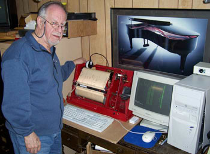
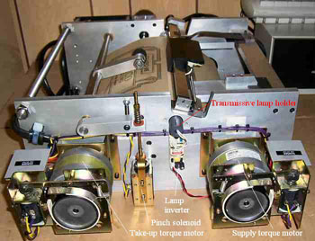
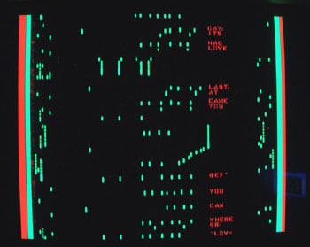
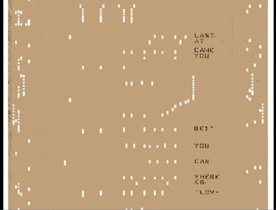

Music rolls were developed in the mid to late 1800's. Until recently much of the music on these rolls
was in danger of being lost as the paper media deteriorated by the normal ageing processes. Richard Stibbons
pioneered the work of converting the punched paper music into digital form.
However the Wurlitzer Band Organ Rolls used on this site were originally scanned by Terry Smythe
who has developed and built his own roll scanner.
Terry has a background in government administration and management and was not well equipped
to carry out this kind of project. His scanner started out in life as a rusty old AutoTypist
roll frame, an early automatic typewriter built around pneumatic player piano technology.
According to him he enlisted help from Richard Stibbons, Jim Cullen, Bob Pinsker, Albert deBoer,
Warren Trachtman, Gene Gerety, Spencer Chase, Kevin Keymer, Jack Breen, Ross Chapman, Bill Earnest,
Peter Phillips, Wes Melander, Milton Schenk, James Stoyka, John Klassen, Henry Bohncke, Bill Flynt,
plus possibly a few others.
Finally he produced the working roll scanner shown below.

Terry scanning an Ampico roll.
Scanning the roll is only the first step which converts it into a bit map format which can then be
electronically processed to produce whatever results are desired.
I currently do not know how Terry converted his scans to midi (some of the midi files contain the words
"Rendered by Kevin Keymer"), but do know the files contained
all the necessary information (except the control tracks) to allow me to process them
with a midi editor and subsequently make the Band Organ Music on this site.
These pictures are from a Mk4 scanner developed by Larry Doe and Anthony Robinson.
This scanner captures printed as well as punched data.

Mk4 Scanner detail

Computer display during scanning
Green = data
Red = printing
Black = paper
Blue = outside paper edge
Red = outside the scan area

The finished .CIS viewed with Anthony Robinson's CISVIEWER
Note: The scan is well defined and free from artefacts. This is piano music which has control tracks
down each side with the musical notes in between, down the middle.
The .CIS graphic image file created from scanning the roll contains transition information indicating where
the image changes between paper and hole for each scan line. This is essentially an edge-detection image
representation of the roll. Thus this format is non standard and involves large cumbersome files
which are difficult to store and not easy to process except with specialised software.
The primary aim of the next processing step is to get the scan into
a standard format such as midi which is a very versatile and compact format
ideal for storing any form of music. Warren Trachtman's RollScanConverter program
was purpose designed for this task and is the only program that I know of which can
do this job effectively.
An e-roll is a simple midi formatted file which contains only an image of the original scanned roll. It
is easy to produce, compact and an ideal format for archiving rolls. It will
not normally play correctly in a midi player but this is no problem because simply
passing an e-roll through the appropriate filter chosen from a set of filters will convert it to playable
form whether this be in a media player or player piano or band organ which have been
fitted with appropriate midi (e.g. e-valve) transducers. Other filters could convert an e-roll
to a master for punching new paper rolls or to .mp3 or .ogg for personal players.
Unfortunately this is not the way paper music rolls have been preserved to date. The e-roll stage
has been bypassed and emphasis has been placed on producing midi files in multiple formats
which will directly play on the various instruments mentioned above. In many cases this
has lost at least some of the original information from the scanned paper roll. For
example the control tracks from Wurlitzer Band Organ Rolls have been lost and some or even
all of the notes have been incorrectly rendered.
In spite of careful searching I have not been able to find even one Band Organ e-roll on line.
Thus when it comes to producing my first e-roll I am working somewhat in the dark as there
is no proper specification available either.
However there are a lot of clues, mostly provided by Warren Trachtman.
The e-roll should be in midi type 0 format, the simplest and easiest to understand and produce.
There should be only one midi channel, channel 1.
The midi notes and controls should have a durations and timings as in the original scanned roll.
The midi note pitches should correspond to the standard midi note scale.
There should be one note pitch for each tracker bar hole
Note pitches should be in an ascending order corresponding to the tracker bar holes beginning at the first hole.
"Tracks are mapped to MIDI pitch = track number". My interpretation: the first tracker bar hole = midi note 0.
(I have noted that Warren Trachtman has not been using this guideline for piano e-rolls. However a piano
has a continuous chromatic scale with no omitted notes. It also does not have overlapping keyboard scales.
Band organs and some other organ like instruments do not have these advantages. Whatever base is chosen for
band organs a midi image of a band organ music roll is not going to sound musical when played on a normal midi player.)
All note velocities should be set to 65.
(There is some opinion that control track note velocities should be set to 5.)
The midi patch should be set to the midi default.
The tempo should be set to the midi default. (The RollScanConverter follows whatever tempo is set up
in the .CIS file.)
For experimental purposes I have produced an e-roll for a Wurlitzer Style 125 Band Organ by reverse engineering
an available Band Organ file.
Having made my first e-roll and played about with it; it is evident that although a midi base of 0
is satisfactory from a technical standpoint it does not provide a very good practical base. This is because
midi note 0 represents a frequency of 8Hz, which is not only below the normal limits of audibility it
cannot be reproduced by the average cheap loudspeaker. This means that auditioning e-rolls with this base
would not be meaningful.
The midi note range has only 128 notes numbered from 0 to 127. In order to allow for tracker bars
with 100 holes or so (the Wurlitzer 165 tracker bar has 75 holes) I suggest a better practical base
would be midi note 24. This is a frequency of 32Hz which can be reproduced and heard.
I will be using a midi base of 24 in future. This still does not mean that Wurlitzer e-rolls will
sound at all musical when played on a standard midi player.
I have now produced another e-roll, this time for a Wurlitzer style 150 Band Organ, using a midi base of 24.
Again this was done by reverse engineering an existing available band organ file. I have also updated
my first e-roll to the new base.
This roll is for a Wurlitzer 165 Band Organ and as there are no w165 files available I have produced it
by filtering my second w150 e-roll to produce the correct layout.
As I have stated above wurlitzer e-rolls will never sound musical when played by a standard midi player.
Thus I have produced filters for each of the three roll styles which will convert Wurlitzer e-rolls to a
musically acceptable midi file. This simple type of filter can not produce properly instrumented Band Organ midi
files but any good midi editor will be able to convert the filter outputs into playable music.
I have now produced a package e-roll_package.zip which interested readers can download
and examine themselves (minor errors in package corrected 7 November 2013). Any comments will be carefully considered.
This section details how e-roll midi files are produced from .CIS files using the RollScanConverter
mentioned above. This program, which is for windows only, can be obtained direct from the source
at
RollScanConverter_XML_2007June23.zip
The RollScanConverter, as supplied is set up only for processing piano rolls.
It comes with no information on what it can do or how to use it. So I had to
discover this by experimenting.
As I understand it the RollScanConverter cannot directly produce playable midi
files from Band Organ rolls. Thus its ScanMidi files are of no interest.
The RollScanConverter uses its RollTypeDefinitions.xml file to provide data
about the roll being processed. The supplied file contains no data for Band
Organ Rolls so suitable data must be added before Band Organ Rolls can
be processed.
The .xml file contains real measured data for the rolls being processed.
As we are only interested in e-roll.midi outputs most of the complicated data
referring to playable piano roll midi files is not relevant.
All measurements are in inches.
<width> Width of the roll (7.0)
<LowerRollEdgeExpectedLocation> the origin for measurements (0.0)
<UpperRollEdgeExpectedLocation> Upper roll edge location (7.0)
<IgnoreScanDataBelow> limit below which there will be no useful data (0.1)
<IgnoreScanDataAbove> limit above which there will be no useful data (6.9)
<LowestTrackHoleNumber> the first tracker bar hole number (1)
<HighestTrackHoleNumber> the last tracker bar hole number (54)
<DefaultTrackCenterSpacing> distance between the centres of tracker bar holes (0.1227)
<DefaultTrackToMidiPitchTranspose> the midi note base for e-rolls, I have used 22 here
because an additional offset of 2 is provided by the RollScanConverter.
<DefaultTrackHolePunchDiameter> this is for wurlitzer rolls (0.070)
<InterpretWebbingLimitAsSeconds> (true)
<DefaultRemoveWebbingSmallerThan> this applies to a roll tempo of 85bpm (0.10) seconds
<RollPunchStepRangeMin> leave alone unless you know what you are doing (0.028)
<RollPunchStepRangeMax> ditto (0.066)
<SetChannelToInstrument Channel="0"> the midi patch to use (0)
<DefaultMapToMidiChannel> the midi channel to use, this is channel 1 in cakewalk (0)
<DefaultLeadingEdgeShift> leave alone (0.0)
<DefaultTrailingEdgeShift> leave alone (0.0)
<DefaultTrackNoteVelocity> midi note velocity for all notes (65)
<TakeupSpoolAccelerationPctPerFoot> we do not require acceleration (0.0)
<ApplyAccelerationToWebbing> leave alone (false)
<ApplyAccelerationToTempo> leave alone (false)
Set Scanner Horizontal DPI to the correct (usually 300) value for the scanner.
Paper music rolls are usually placed more or less centrally in the scanner
for scanning. This means that the resulting .CIS files have a large amount
of empty space and rubbish data on the left hand side. It is necessary to
add a negative Offset to the Scanner settings in order to align the left hand
edge of the scanned roll with the "0" mark of the RollScanConverter's horizontal
measure.
It is necessary to manually adjust this physical offset for each different roll
processed in order to account for mechanical tolerances.
The RollScanConverter has automatic corrections to follow wandering tracks.
However this is not active for the first few seconds of processing so it is
vital to get the physical offset correct at the start of the roll. You can
turn "Show Tracking Corrections" on and off to see how big the tracking error
is.
The Stretch Factor is a multiplying factor for horizontal dimensions. Leave
it at 1.0 unless the right hand edge of the scanned roll on the screen
does not line up with the correct mark on the horizontal ruler.
Leave Scanner Mode on Model 1 - no encoding unless you know different.
Use old .CIS format only if necessary
Leave Scan Illumination Method at AutoDetect
Takeup Spool Drive Compensation set to 0%/foot
Active TRacking On
Twin Array Scanner Parameters: These are critical or the music will be mistimed
and/or out of tune.
Vertical offset: Adjust so that left and right halves of the scan visually begin
at the same time.
Overlap Width: Set this initially to 0 and observe the repeated overlapped notes
on the right hand part of the scan, then increase until the repeated notes are
exactly covered by their images on the left hand part of the scan.
A more accurate way is to measure and calculate it using the CIS viewer.
Save the settings so you can easily return to them.
The 85 bpm roll tempo indicated in the .CIS file was preserved by the RollScanConverter
and reproduced in the e-roll midi file (confirmed by Cakewalk). However I found
that the e-roll midi file played at about 120bpm, which is 40% too fast.
The lines per inch data in the .CIS file was stated to be 204. This must
be intended to refer to the initial lines per inch because the paper speed
will increase significantly as the scan progresses from the first
tune on the roll to the last tune of a 12 tune roll. Thus the number of
lines per inch is not constant. As expected I found that altering the number
of lines per inch and re-processing the tune altered the playing tempo
proportionally.
Thus I must conclude that this figure is wrong and should be corrected for future
work.
The .CIS file I was processing was produced by a dual head scanner.
Array Separation: 234 (No units!!! Its certainly not inches, could it be lines?)
Changeover Pixel: 238 (Experimentally this corresponds with overlapped pixels).
As the array separation will produce a timing error between the two halves
of the scan it is important for it to be known and expressed in terms
of the paper lines/inch speed so that it can be cancelled out during the
processing. Wisely it appears that the RollScanConverter ignores this
data and allows the Array Separation and Scan Overlap to be manually adjusted
as above in 4.2.
When the .CIS file has been processed it is useful to have a look at the
resulting e-roll with a midi editor. Check that
obviously recognisable tracks, i.e. the snare drum on tracker bar 6 and
the bass drum on tracker bar 53 have been correctly reproduced as midi notes
29 (Cakewalk F2) and 76 (Cakewalk E6).
Check that the lowest midi note is 24 (Cakewalk C2) (swell shutters open).
Also check that the e-roll notation looks clean and free from spurious notes.
Use the fw150e-p.rpl filter to convert the e-roll to playable music and listen to it.
If it sounds OK then the e-roll is good and the playable file can be edited
to your liking. The e-roll should be kept in an archive for future reference.
Starting from basics I understand from data gathered from various sources
that the roll take-up spool is supposed to be driven at a constant
rotational speed (controlled by the organ mechanics) when playing.
An initial (adjustable) paper speed of 8.3ft/minute has been mentioned.
This means that as the roll rotates the take-up spool diameter will increase
and thus the paper speed will increase.
Since the music is supposed to play at a constant tempo the slots in the
paper roll for a constant note duration must get longer as the tune
progresses. For rolls with say 12 tunes this additional length will be
significant.
However provided the roll scanner has a similar diameter constant speed take
up spool the music will be scanned correctly and later notes in the .CIS
file will still represent the same durations as the earlier notes.
In order to test this on the files now in my possession I set the
"Takeup Spool Drive Compensation" in the RollScanConverter to 0.
I then converted the first and last tunes of a roll of 12 tunes
to e-roll.midi.
I then examined the duration of the bass drum notes (which should be
constant) at the beginning and end of both e-roll.midi files.
First tune: start average 52.6, end average 54.6
12th tune: start average 50.5, end average 51.5
I conclude that these small timing differences would not be audibly detectable
and are thus insignificant.
Thus I conclude that Takeup Spool Drive Compensation should be set to 0 for e-rolls.
This will transfer through to playable midi files produced from e-rolls by simple
filtering allowing them to play at the correct tempo from beginning to end.
Although the holes in Band Organ rolls look rectangular they were actually punched
with round punches of 0.07 inches diameter. Long sustained notes require a long thin
hole to be produced by punching a string of evenly spaced consecutive holes.
In areas where there are also adjacent long thin holes,
the paper remaining requires support to keep it properly positioned. This is
achieved by breaking up the long thin holes into shorter holes with short bridges
at regular intervals. The bridges are long enough to provide the required stability
and short enough not to interrupt the sustained notes when played on an organ.
The bridges are also known as webbing.
Since midi reacts almost instantaneoulsy the bridges would cause long sustained
notes to sound as multiple shorter notes. This is not acceptable so the bridges
must be removed in midi files. The RollScanConverter does this automatically but
relies on a parameter <DefaultRemoveWebbingSmallerThan>. This parameter
may be defined in terms of distance in inches or time in seconds. We require it
to be defined in terms of time because the paper speed is unknown and not constant.
Using the roll tempo of 85 bpm (= 0.70 s/beat) my measurements indicate that bridges
can vary between 0.058 and 0.087 seconds duration.
Thus <DefaultRemoveWebbingSmallerThan> should be set to say 0.100
and <InterpretWebbingLimitAsSeconds> should be set to true.
This works in the RollScanConverter and the webbing is removed satisfactorily. But
note that the figures apply only to a roll tempo of 85bpm.
Anyone punching new rolls from a Band Organ e-roll file should be aware that he
is responsible for adding whatever compensation he considers necessary
to cope with the spool diameter and paper thickness he is using.
The roll puncher is also responsible for inserting any webbing he needs.